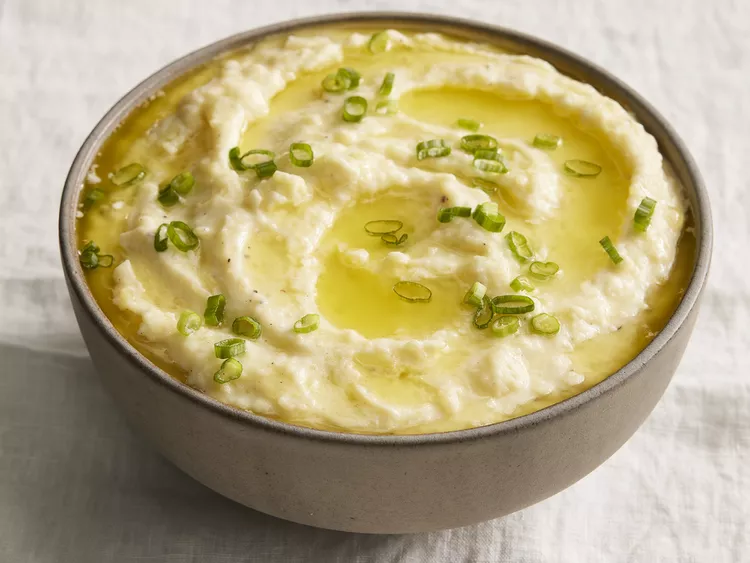

Sour Cream Smash Potatoes

Description
Try this recipe if you're looking for smooth, fluffy, creamy mashed potatoes with a lovely rich garlic finish. Infusing garlic butter on top of the fluffy mash is an excellent way to add depth of flavor and another layer of richness to mashed potatoes. Leftovers can be used as the base for a loaded potato bowl or make a wonderful side dish.
Ingredients
- 3 pounds Yukon Gold potatoes, peeled and cut into 2-inch chunks
- 1 ½ tablespoons kosher salt
- ½ cup salted butter, cubed
- 4 large cloves garlic, crushed
- 1 cup whole milk, warmed
- 1 cup sour cream
- 6 tablespoons unsalted butter, cubed
- 2 teaspoons kosher salt
- ½ teaspoon freshly ground black pepper
- 2 tablespoons thinly sliced scallions
Steps
- Place potatoes and 1 1/2 tablespoons of the salt in a large stock pot. Add enough cold water to cover potatoes by 2 inches. Bring to a boil over high heat. Reduce heat to medium-high and boil until potatoes can be easily pierced with a fork, about 15 minutes.
- Meanwhile, place salted butter and garlic in a small saucepan over low heat. Cook, stirring occasionally until garlic is fragrant and white milk solids have separated from butter, 2 to 3 minutes. Remove from heat and cover to keep warm.
- Remove potatoes from heat and drain in a colander. Return potatoes to the pot; add milk, sour cream, unsalted butter, 2 teaspoons salt, and pepper. Mash using a potato masher until smooth. (Avoid over-mashing or the starches will form a glue-like texture.) Transfer to a serving bowl.
- Pour garlic butter through a fine mesh strainer into a small bowl. Discard milk solids and garlic. Pour butter over mashed potatoes and sprinkle with scallions.